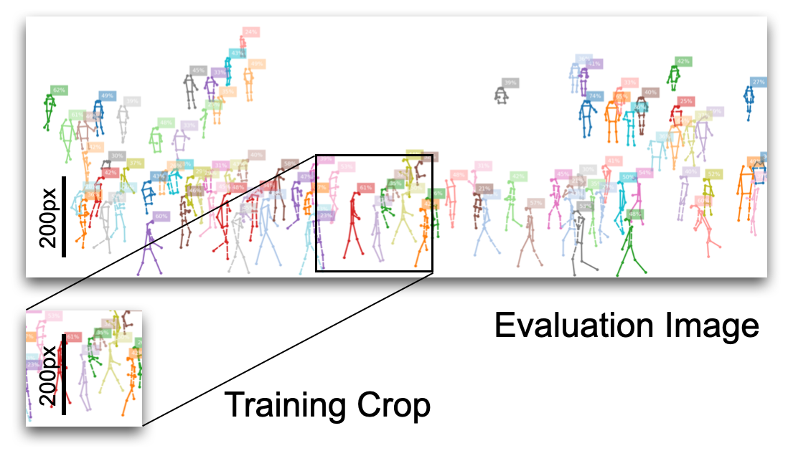

Training¶
This section introduces training to create your own models. You don’t need to do this step if you use pre-trained models for Prediction on your own images. For training, you will need a dataset. See Datasets for instructions about a few popular datasets.
Training a model can take several days even with a good GPU. Many times existing models can be refined to avoid training from scratch.
The main interface for training with OpenPifPaf is the command line tool openpifpaf.train. A quick way to get started is with the training commands of the pre-trained models. The exact training command that was used for a model is in the first line of the training log file. Below are a few examples for various backbones.
Composite Loss Function¶
OpenPifPaf uses an off-the-shelf backbone like a ResNet and then adds the smallest possible (approx) head networks on top: a single 1x1 convolution. The outputs of the head networks are the composite fields. At each location, the composite head produces a confidence together with some location and attribute information.
In our first paper [KBA19], we show how to learn these composite fields with a binary cross entropy for the confidence, a Laplace loss for regression and a plain L1 regression loss for scale. The Laplace loss has been valuable for OpenPifPaf as it proved to be better than any other of the regression losses for us. One interpretation is from its original motivation as a better objective for a probabilistic problem of location prediction:
That is the main motivation why I used this loss and defended its continued use. Over time, I also came to appreciate an empirical interpretation: an adversarial trade-off between the two terms in the sum that evolves as the network learns. During the initial phase of training, predictions \(\hat{x}\) are poor and the network better predicts large \(\hat{b}\) to reduce the first term at the cost of a logarithmic penalty from the second term. As the network learns to predict better, it starts to predict smaller values of \(\hat{b}\) to reduce the logarithmic penalty while not incuring too large costs anymore because its predictions for \(\hat{x}\) are good. This mechanism also has consequences as the network continues to train and starts overfitting. Other regression losses just overfit gently more and more. The Laplace loss, however, will really try to profit from its overfitted knowledge and become very agressive and reduce \(\hat{b}\). As explained in our paper, we add an extra constant \(b_\textrm{min}\) that prevents aggressive regression losses below fractions of pixels.
Aside on negative losses: A loss function is something that is minimized. A valid loss is, for example, the L1 loss \(|\hat{x} - x|\) but equally valid is the loss \(|\hat{x} - x| - 5000\). These losses would lead to the exact same trained networks as they produce exactly the same gradients. Most loss functions are not negative because their final operation is a square or an absolute value as in the case of L1 or L2 loss but it is not a generic property of loss functions. The Laplace loss above can become negative infinity when \(\hat{b} \to 0\) and is still a valid objective to minimize.
New in v0.13: To produce truely composite objects, I would like the adversarial trade-off to be shared across confidence and regression: the predicted \(\hat{b}\) should only become smaller as both confidence and regression become better. We don’t have to learn a fantastic regression when the confidence predictions are poor. We saw signs of the problem when we started to train composite fields for detection: confidence predictions were almost random while regressions started to manifest. The solution is to implement the adversarial mechanism discussed above for the Laplace regression to both confidence and regression tasks and to share the predicted \(\hat{b}\).
While the exact form of the Laplace loss came from a probabilistic interpretation that lead naturally to the adversarial mechanism, this step is not as obvious for confidence predictions and there are multiple options (including one suggested in the paper by Kendall et al on the Laplace loss). Here, I chose to to map the Focal loss to a Gaussian loss by gradient matching and then applying the probabilistic interpretation in that mapped space leading to the adversarial terms. The gradient of the Focal loss FL w.r.t. \(\hat{x}\) for positive samples \(x=1\):
where the part in square brackets is due to the Focal loss modification of BCE. I have used the standard \(p(\hat{x}) \equiv 1 / (1+e^{-\hat{x}})\) and \(\overline{p}(\hat{x}) \equiv 1 / (1+e^{\hat{x}})\) which gives the helpful identities \(1-p(\hat{x}) = \overline{p}(\hat{x})\) and \(\partial \ln p(\hat{x}) / \partial \hat{x} = \overline{p}(\hat{x})\). The second step is to match this gradient to the gradient of an L2 loss. This matching provides the fictituous target point \(t_2\) for the L2 regression:
This target point depends on the prediction \(\hat{x}\) but it is still a target as far as the L2 loss is concerned, i.e. the gradients on \(\hat{x}\) are detached and, therefore, there are no gradients back-propagating through \(t_2\).
Finally, as we have cast classification to an exactly matched regression problem, we are in a position to apply Gaussian uncertainties on this L2 regression loss. There is, of course, no good interpretation for what this uncertainty represents in the space before the mapping. We use a single predicted \(\hat{b}\) for both the confidence and regression uncertainties and in that way achieved our goal: only when we have both good confidence and good regression predictions will our network reduce its predictions of \(\hat{b}\).
Training Crop Size¶
Training and evaluation image sizes are unrelated in fully convolutional architectures like OpenPifPaf. Instance size distribution between training and evaluation needs to be preserved. The size of the image that surrounds the instance to detect has little impact: for humans of height 100px, it does not matter whether that is inside a \(640\times480\) image or inside a 4k or 8k image. Therefore, you can keep the size of your training crops (selected with --square-edge) quite small even when evaluating on large images. The default is --square-edge=385 for cocokp and that is reasonable when most of the humans are not larger than 300px during evaluation.

The training crop size is a major factor for GPU memory consumption and for training time.
Reproducibility¶
Every training log file contains the command that was used to train under the key args. There is also a version key that specifies the precise version of OpenPifPaf that was used to train, like “0.11.9+204.g987345” (generated by versioneer). This means that the last tag was 0.11.9, that there are 204 additional commits beyond that tag, and that the hash of the current commit is “987345” (without the “g” as that simply stands for git). If you had uncommitted changes, there is an additional “dirty” suffix. Try to avoid “dirty” version numbers for training as it is impossible to tell whether you were just correcting a typo in the readme or had a substantial change that influences the training. Your local git command line client but also GitHub can compare to the short git hashes.
Multiple Datasets¶
OpenPifPaf supports simultaneous training on multiple datasets. You specify multiple datasets by concatenating them with a -, e.g. to train on COCO Keypoints cocokp and on COCO Detections cocodet you specify in your training command --dataset=cocokp-cocodet. This also works for custom datasets defined in plugins.
The samples from each dataset are tracked with weighted counters and the dataset for the next batch is chosen by the lowest counter. You specify the dataset weights (or you can think of it as an importance), for example, as --dataset-weights 1.0 0.5. That means that the first dataset (cocokp in the above example) is twice as important as the second one (e.g. cocodet) and two-thirds of the batches will be from the first dataset and one-third will be from the second.
An epoch is over once the first of the datasets is out of samples. As the datasets are randomized during training, a different set of samples will be used from epoch to epoch. That means that eventually all data will be utilized of the larger datasets even if not all data is used during a single epoch.
Overfitting¶
An effective way to validate the pipeline is working, loss functions are implemented correctly, encoders are correct, etc. is to overfit on a single image. You should be able to produce perfect predictions for that image. Some caveats: you need to deactivate augmentations, you must evaluate at the exact trained image size and the image should not contain crowd annotations (i.e. areas that will be ignored during training). Here is an example training command for a cocokp overfitting experiment:
time CUDA_VISIBLE_DEVICES=1 python3 -m openpifpaf.train \
--lr=0.01 --momentum=0.9 --b-scale=5.0 \
--epochs=1000 --lr-warm-up-epochs=100 \
--batch-size=4 --train-batches=1 --val-batches=1 --val-interval=100 \
--weight-decay=1e-5 \
--dataset=cocokp --cocokp-upsample=2 --cocokp-no-augmentation \
--basenet=shufflenetv2k16
The very first image in the training set has a large crowd annotation. Therefore, the above command overfits on four images. Here is the corresponding predict command for the second image in the training set:
python3 -m openpifpaf.predict \
--checkpoint outputs/shufflenetv2k16-201007-153356-cocokp-1de9503b.pkl \
--debug-indices cif:5 caf:5 --debug-images --long-edge=385 --loader-workers=0 \
--save-all --image-output all-images/overfitted.jpeg \
data-mscoco/images/train2017/000000262146.jpg
While the field predictions are almost perfect, it will predict two annotations while there is only one ground truth annotation. That is because the standard skeleton has no connection that goes directly from left-ear to nose and the left-eye is not visible and not annotated. You can add --dense-connections to include additional connections in the skeleton which will connect the nose keypoint to the rest of the skeleton.
ShuffleNet¶
ShuffleNet models are trained without ImageNet pretraining:
time CUDA_VISIBLE_DEVICES=0,1 python3 -m openpifpaf.train \
--lr=0.0003 --momentum=0.95 --b-scale=10.0 --clip-grad-value=10 \
--epochs=250 --lr-decay 220 240 --lr-decay-epochs=10 \
--batch-size=32 \
--weight-decay=1e-5 \
--dataset=cocokp --cocokp-upsample=2 --cocokp-extended-scale --cocokp-orientation-invariant=0.1 \
--basenet=shufflenetv2k16
You can refine an existing model with the --checkpoint option.
We found that for stable training, the learning rate \(\lambda\),
the clip-grad-value \(c\) and the \(\epsilon\) from the denominator of the
BatchNorm should obey:
where the default \(\epsilon\) is \(10^{-4}\) (different from the PyTorch default). To fit large models in your GPU memory, reduce the batch size and learning rate by the same factor.
ResNet¶
ResNet models are initialized with weights pre-trained on ImageNet. That makes their training characteristics different from ShuffleNet (i.e. they look great at the beginning of training).
Debug Plots¶
As for all commands, you need to decide whether you want to interactively show the plots in matplotlib with --show (I use itermplot) or to save image files with --save-all (defaults to the all-images/ directory).
You can inspect the ground truth fields that are used for training. Add --debug-images to activate all types of debug plots and, for example, select to visualize field 5 of CIF and field 5 of CAF with --debug-indices cif:5 caf:5.
You can run this on your laptop without a GPU. When debug is enabled, the training dataset is not randomized and therefore you only need the first few images in your dataset locally.
Logs¶
For reference, check out the log files of the pretrained models. Models with their log files are shared as release “Assets” in the separate openpifpaf/torchhub repository: click on “releases” and expand “Assets” on the latest release.
To visualize log files with openpifpaf.logs:
python3 -m openpifpaf.logs \
outputs/resnet50block5-pif-paf-edge401-190424-122009.pkl.log \
outputs/resnet101block5-pif-paf-edge401-190412-151013.pkl.log \
outputs/resnet152block5-pif-paf-edge401-190412-121848.pkl.log
Evaluation metrics like average precision (AP) are created with the openpifpaf.eval tool. To produce evaluation metrics every five epochs for every new checkpoint that is created:
CUDA_VISIBLE_DEVICES=0 python3 -m openpifpaf.eval \
--watch --checkpoint "outputs/shufflenetv2k??-*-cocokp*.pkl.epoch??[0,5]" \
--loader-workers=2 \
--decoder=cifcaf:0 \
--dataset=cocokp --force-complete-pose --seed-threshold=0.2
Testset Submission¶
CUDA_VISIBLE_DEVICES=0 python3 -m openpifpaf.eval \
--checkpoint shufflenetv2k30 \
--loader-workers=2 \
--decoder=cifcaf:0 \
--dataset=cocokp --force-complete-pose --seed-threshold=0.2 \
--cocokp-eval-testdev2017 --coco-no-eval-annotation-filter --write-predictions
This will produce the file shufflenetv2k30.eval-cocokp.zip which you can submit to the competition on codalab.
Detection (experimental)¶
time CUDA_VISIBLE_DEVICES=0,1 python3 -m openpifpaf.train \
--lr=0.0003 --momentum=0.95 --clip-grad-value=10 \
--epochs=150 \
--lr-decay 130 140 --lr-decay-epochs=10 \
--batch-size=64 \
--weight-decay=1e-5 \
--dataset=cocodet --cocodet-upsample=2 \
--basenet=resnet18 --resnet-input-conv2-stride=2 --resnet-block5-dilation=2
with eval code:
CUDA_VISIBLE_DEVICES=0 python3 -m openpifpaf.eval \
--watch --checkpoint "outputs/resnet??-*-cocodet*.pkl.epoch??[0,5]" \
--loader-workers=2 \
--dataset=cocodet --decoder=cifdet:0 \
--seed-threshold=0.1 --instance-threshold=0.1
COCO AP=24.3% at epoch 90 (now outdated).
Cloud and HPC¶
OpenPifPaf can be trained on cloud infrastructure and in high performance computing (HPC) environments. We have good experience with the pytorch/pytorch docker containers. The latest tag does not include any development packages like gcc. For that, you need a “devel” package (e.g. pytorch/1.6.0-cuda10.1-cudnn7-devel).
This is a development flow that worked well for us:
start with an empty directory
launch the “devel” container and bind/link your current empty directory
create a Python virtualenv and install all software from within the devel container into the virtualenv
never modify this virtualenv from the host, always from within the devel container
After setting up your environment, you can execute the training. You can even use the container without the “devel” tools to submit the job.
HPC job submission: Our environment supports Slurm and Singularity. Run
sbatch ./train.sh \
--lr=0.0003 # and all the other parameters for training from above
with train.sh containing:
#!/bin/bash -l
#SBATCH --nodes 1
#SBATCH --ntasks 1
#SBATCH --cpus-per-task 40
#SBATCH --mem 96G
#SBATCH --time 72:00:00
#SBATCH --account=<your-account-name>
#SBATCH --gres gpu:2
srun singularity exec --bind <make-host-dir-available> --nv pytorch_latest.sif \
/bin/bash -c "source ./venv3/bin/activate && python3 -u -m openpifpaf.train $(printf '%q ' "$@")"
Similarly, an eval.sh script might be run with
sbatch ./eval.sh \
--watch --checkpoint "outputs/shufflenetv2k16-201023-163830-cocokp.pkl.epoch??[0,5]" \
--dataset=cocokp \
--loader-workers=2 \
--force-complete-pose --seed-threshold=0.2
and look like this:
#!/bin/bash -l
#SBATCH --nodes 1
#SBATCH --ntasks 1
#SBATCH --cpus-per-task 20
#SBATCH --mem 48G
#SBATCH --time 06:00:00
#SBATCH --account=<your-account-name>
#SBATCH --gres gpu:1
pattern=$1
shift
srun singularity exec --bind <make-host-dir-available> --nv pytorch_latest.sif \
/bin/bash -c "source ./venv3/bin/activate && python3 -m openpifpaf.eval $(printf '%q ' "$@")"
DistributedDataParallel¶
This mode of parallelization is activated with the --ddp argument.
With torch.distributed.launch:
python -m torch.distributed.launch \
-m openpifpaf.train --ddp \
--all-other-args
By default, this will replace all BatchNorms in the model with SyncBatchNorms.
The only argument that behaves differently is --batch-size which is
the total batch size across all GPUs with DataParallel but here with
DistributedDataParallel it is the batch size of a single process/GPU.
This is the behavior of PyTorch in these two modes and we did not add
any code to change that.
On SLURM, the equivalent sbatch script is:
#!/bin/bash -l
#SBATCH --ntasks 4
#SBATCH --cpus-per-task 20
#SBATCH --mem 48G
#SBATCH --time 72:00:00
#SBATCH --gres gpu:2 # or as many GPUs as you have in a node
srun --gpu-bind=closest singularity exec --bind /scratch/izar --nv pytorch_latest.sif \
/bin/bash -c "source ./venv3/bin/activate && MASTER_ADDR=$(hostname) MASTER_PORT=7142 python3 -u -m openpifpaf.train --ddp $(printf "%s " "$@")"